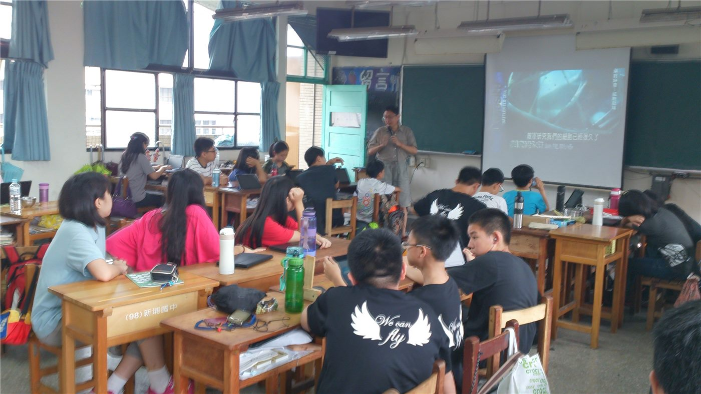

부산화교소학, 115학년도 교사 초빙 공고… 지역 화교 교육 인력 충원
부산화교소학이 115학년도 교사 초빙 공고를 냈다. 화교학교의 교원 확보는 학교 운영의 지속성과 직결되는 문제로 다뤄진다.
손승종 기자 · 2026.09.11
橋화인소식

부산화교소학이 115학년도 교사 초빙 공고를 게시했다. 공고에는 모집 과목과 지원 자격, 접수 절차가 함께 안내됐다.
광고 문의 · 300×250화교학교의 교원 채용은 자격 요건과 언어 능력, 체류 자격이 함께 고려되는 절차다. 한자와 중국어 교육을 담당할 인력의 확보가 특히 중요한 부분으로 꼽힌다.
재한 화교학교들은 학생 수 변동과 교원 수급 문제를 함께 겪어 왔다. 학교 규모가 크지 않아 한 명의 교원이 여러 과목을 맡는 경우도 있다.
학교 측은 접수 기간과 제출 서류를 공고에 명시했다. 서류 심사와 면접을 거쳐 최종 선발이 이뤄지는 방식이 일반적이다.
교원 채용 공고는 학교 홈페이지 게시판을 통해 공개되며, 지원 관련 문의도 같은 경로로 받는다.
학교는 학기 운영에 차질이 없도록 채용 일정을 학사 일정에 맞춰 진행할 예정이다.
출처·참고 (사실 확인용 — 본문은 직접 재작성)
· http://www.pshwakyo.or.kr/
· http://www.pshwakyo.or.kr/